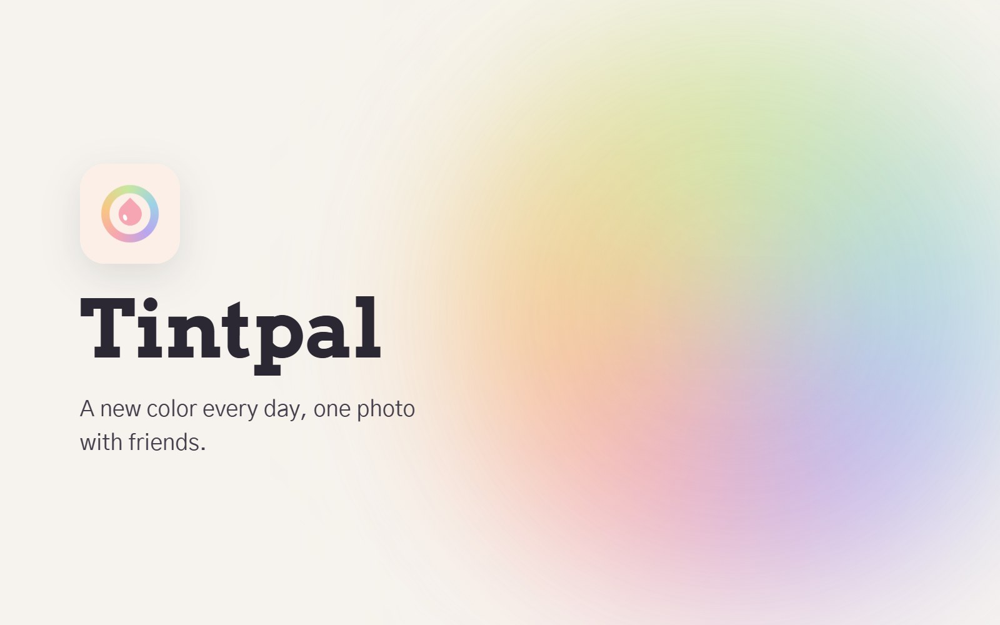
Tintpal
Personal • Sep – Nov 2026 • In progress: testing with real users
Team: Sooa Mo (solo)
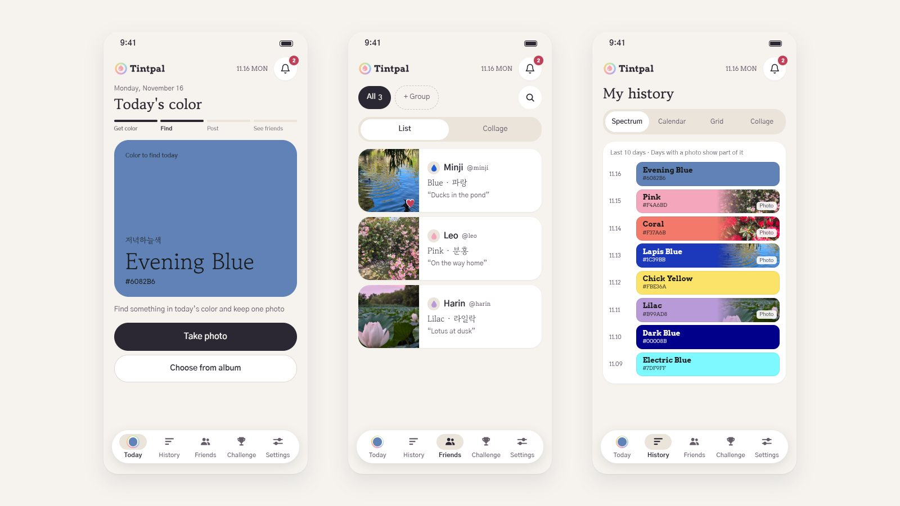
0. Overview
Tintpal gives each person a different color every day. You look around for something that feels like that color, post one photo, and only mutual friends can see it.
The idea came from a few Instagram Reels where friends picked colors on a trip, took photos of things in those colors, and made a collage video. I wanted to have that experience with my friends too, not just on a trip but in everyday life, and in a private place instead of a public feed. I started planning in September and built the first version from late October to mid November. It works on iPhone and Android as a home screen app, in Korean and English.
1. My Role
Product Design · UX/UI · QA
I planned the features and rules, set the design direction, and decided between options in each of the 14 design rounds. I used Claude Design to explore screen ideas and Claude to write the code. My main work was deciding what the app should do, testing every flow on real phones, and finding what was broken or confusing.
2. Design Decisions
2-1. Private by default
During my co-op, I took and edited photos of attendees and coworkers at events. People's rights to their own image mattered, so I always got consent forms before working with the photos. Maybe because of that experience, I felt that if an app stores photos other people took and shares them, it has to be clear that the photos are kept safe and only shown to the people the user chooses. That's why I thought clear Terms of Service and a Privacy Policy were a must.
So in Tintpal, only mutual friends can see each other's photos, and people who aren't logged in can't see any. The friend request button only appears after you type at least the first 4 characters of someone's username, so no one can find other users by typing random letters.
The part I thought about most was reporting. From the start, I planned to make this PWA downloadable from places like the Google Play Store someday, and to publish there, a way to report content and let an admin handle it was required. When a report comes in, the admin has to check the reported photo and act on that account. Looking at other people's photos wasn't something I wanted, but I needed it for my original goal, so I found a way to keep it to a minimum. The admin can only see the one reported photo. Not even I, as the admin, can see that person's other photos, their friends, or their email.
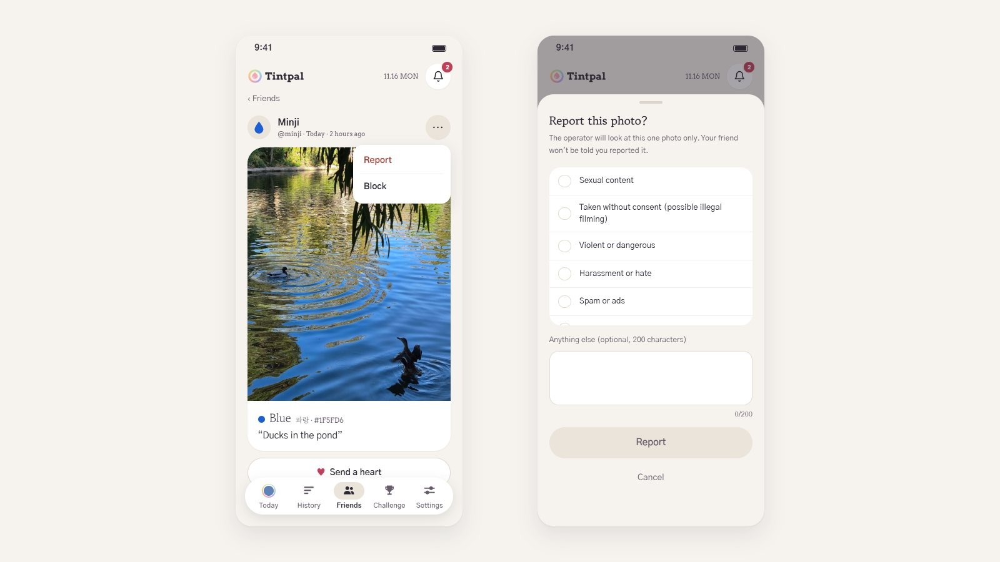
Fig.1: Reporting a friend's photo. The admin only sees the reported photo.2-2. Making the daily color worth opening
I had to think about how to make the app fun to use. A trip only lasts a few days, so I had to figure out what would make people keep using it in their everyday life.
First, the daily color should never make you think, "I always get the same color." I made a list of 212 colors and blocked colors that are too close to the last 7 days. The color is picked from a wide range of color families, like red, orange, yellow, green, blue, purple, and black.
Second, the reveal animation. I thought showing the color right away when you open the app would be less fun. So the first time you open the app each day, there's a button to get your color. When you tap it, colors pass by like a slot machine and stop on today's color.
Third, the onboarding and guides say the photo doesn't have to match the color exactly. The exact color is actually hard to find. The same color can look different depending on the light, the phone, or the screen, and photos often come out a different color from what you see. So there's no failing in my app. The goal isn't taking an exact photo. It's taking a photo, sharing it with people you're close to, and having fun with it.
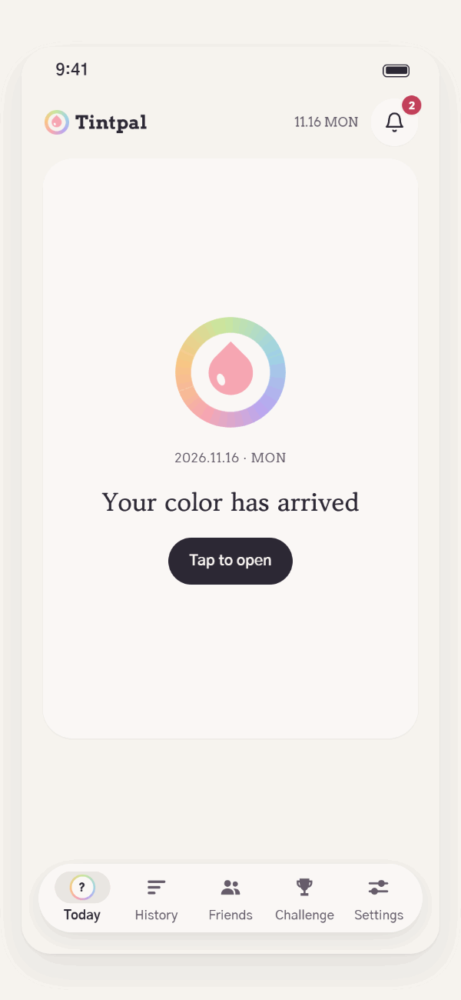
Fig.2: The daily color reveal.2-3. Rethinking the navigation
To make the app feel like taking a photo, the first tab bar put today's color in the center as a circle that went straight to the camera. When I walked through the real user flow, though, the tabs felt awkward, so I looked for another approach.
I tried three directions. The first kept the photo feel. The second aimed for a cleaner look, since the big circle seemed to cover the screen. The third followed a layout many apps already use. History, Today, and Friends alone felt too limiting for the app's navigation, so I went with the familiar layout. It also gave me a place for user settings in the nav.
Then I refined it. I didn't like the Friends icon, and "Me" didn't really read as a profile here, because the tab mostly held personal settings. Friends became a two-person icon, and Me became Settings. Later I asked what could make the app more fun to use. Group challenges felt strong enough to be their own part of the app, so they got a tab too.
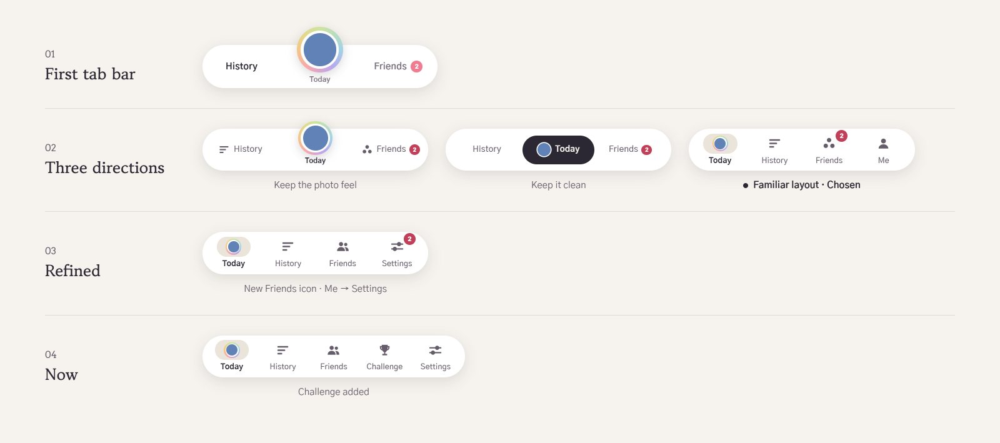
Fig.3: How the tab bar changed, from the first version to now.I also checked the details that are easy to skip: text contrast of at least 4.5:1, touch areas of at least 44px, and color names always written out in text for people who have trouble telling colors apart.
2-4. Designing the logo
Tintpal is an app for taking and posting photos, but I felt that picking a color was the most important part. So I thought about combining a color ring with a camera lens. While working on the color ring, I felt a plain circle was too simple, and a water drop shape could add a small twist and the feel of paint. In the final logo, the drop sits in the center of the color ring.
For the wordmark, I compared several fonts, from rounded sans to serif. The icon is colorful and thick, so I wanted letters bold enough to stand next to it. The logo also has to be readable at very small sizes, so I checked each font small to see which ones got too thin. That's how I chose Arvo 700, a slab serif. Arvo is also used in the app for dates and color codes, so the logo and the screens feel like one brand.
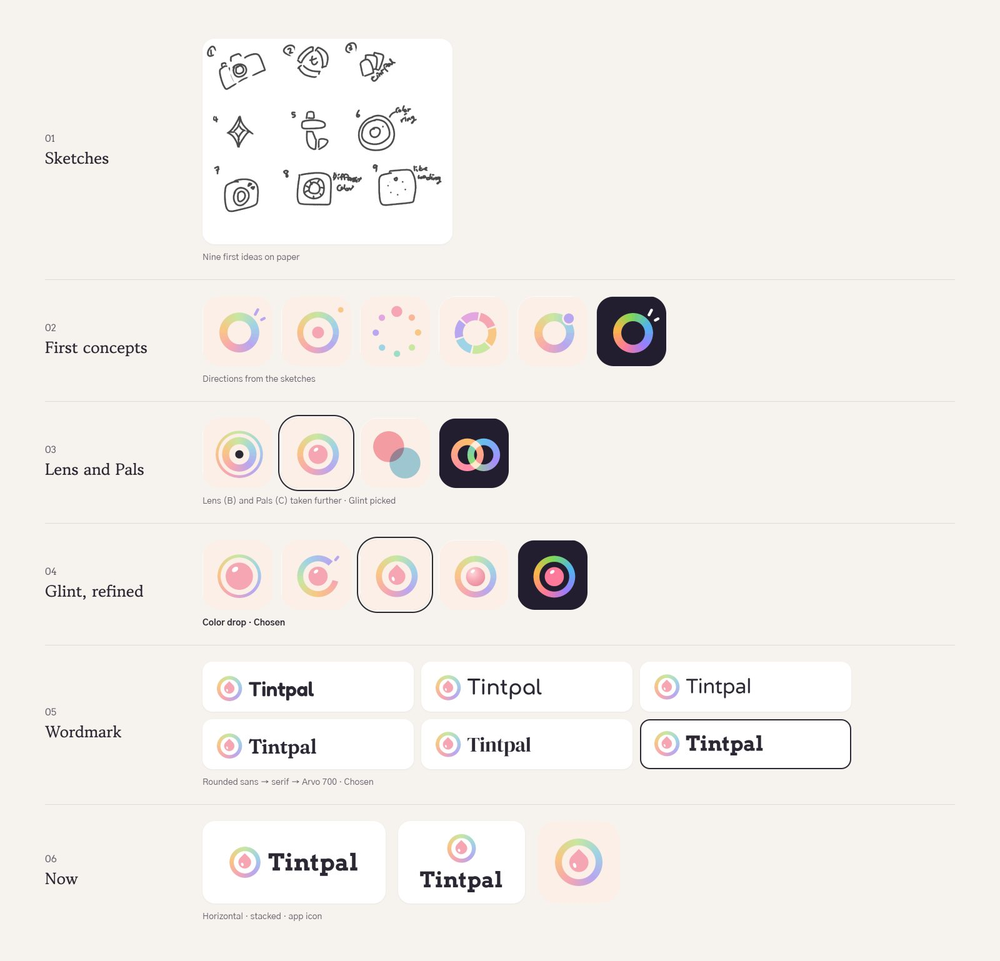
Fig.4: From paper sketches to the final logo.2-5. Testing every flow myself
Since I had to do everything from planning to development, I had to use Claude well. That also meant testing every step myself on my own phone: signing up, posting photos, adding friends, reporting, and deleting an account. On November 14, I introduced the app to close friends and asked them to tell me about any errors or suggestions. I'm still fixing the small bugs and changes they find.
3. Result
I bought the domain tintpal.app, and the app is running live there (v0.1.0). The first version includes the daily color, friends feed, history, collages, weekly group challenges, notifications, and a separate admin page for handling reports.
I haven't promoted it yet. Before asking more people to use it, I'm testing with a small group of real users first to find any bugs or problems. I'm also using free database plans, so the app can't handle a large number of users yet. To keep it free, I have to think about server costs, so I also built a way to close sign-ups from the admin page.
4. Takeaway
I learned that making a single app takes a lot of steps and decisions. Doing the planning, design, and development alone meant a lot of thinking. Working solo, I was the only one who had to decide. But when I work with other people, I'll need to explain the reasons behind each decision clearly, and back them up well enough to make my case.
I also learned how important QA is. Things I thought were fine while building felt different once I actually used the app. Errors came up often, some things worked differently on Android and iOS, and I saw that people have different ideas of what feels normal. Still, by handling planning, design, and development on my own, I learned what each area cares about and what it needs.
Screens
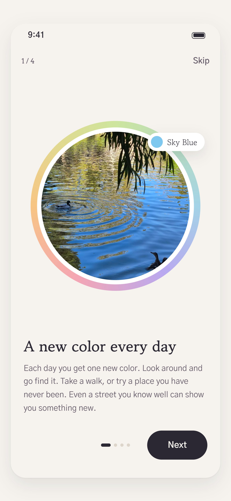
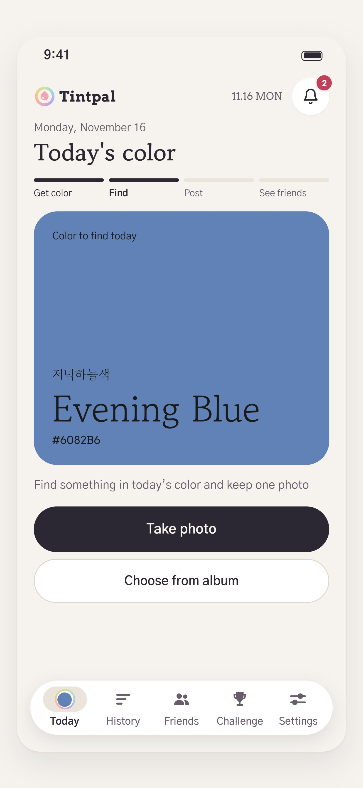
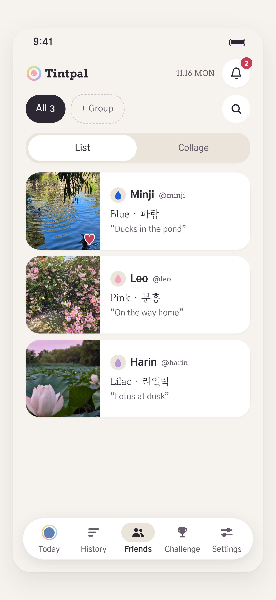
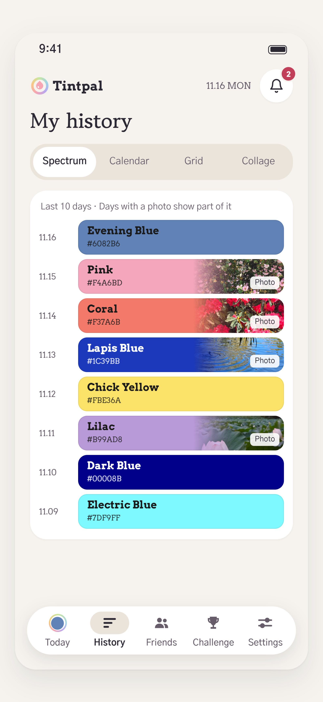
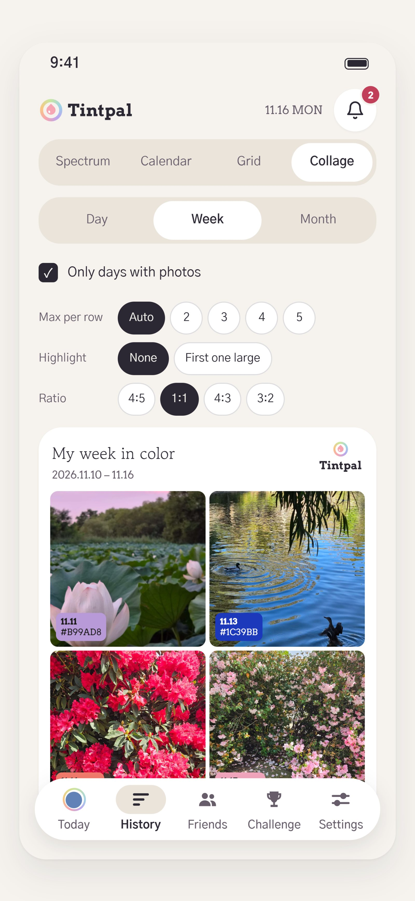
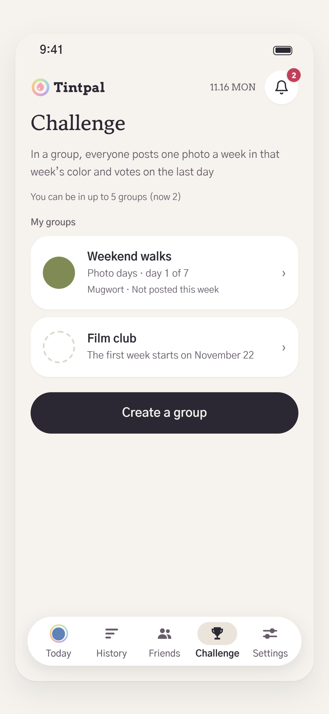